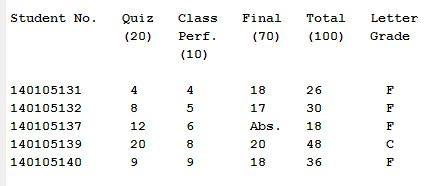

<h1 style="padding-left:4%;padding-top: 2%;padding-bottom: 2%;padding-right: 10%;border-bottom: 1px solid #BDBDBD;">


Grade Counter for AUST


</h1>


MATLAB based program


<h2><a href="GradeCounter.mp4" target="_blank"> Process </a></h2>



